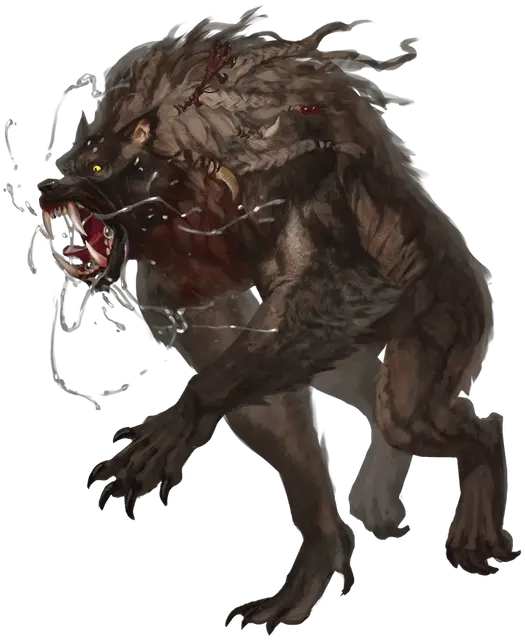

Лугару
Loup Garou
Средний Монстр (Перевёртыш)

Класс Доспеха 16 (природный доспех)
Хиты 170 (20к8 + 80)
Скорость 30 футов (40 фт. в гибридной форме, 50 фт. в облике лютого волка)
| мод | спас | ||
|---|---|---|---|
| СИЛ | 18 | +4 | +4 |
| ЛОВ | 18 | +4 | +9 |
| ТЕЛ | 18 | +4 | +9 |
| мод | спас | ||
|---|---|---|---|
| ИНТ | 14 | +2 | +2 |
| МДР | 16 | +3 | +3 |
| ХАР | 16 | +3 | +8 |
Навыки Восприятие +13, Скрытность +9
Иммунитет к состояниям испуг, очарование
Чувства тёмное зрение 120 футов, пассивное Восприятие 23
Языки Общий
Опасность 13 (10000 опыта)
Бонус мастерства +5
Особенности
Языки. Общий (не может говорить в облике волка).
Кровавое бешенство. Лугару совершает с преимуществом броски атаки против существа, у которого неполные хиты.
Легендарное сопротивление (2/день). Когда лугару проваливает спасбросок, он может вместо этого сделать спасбросок успешным.
Регенерация. Лугару восстанавливает 10 хитов в начале каждого своего хода. Если лугару получает урон от серебряного оружия, эта особенность не действует в начале следующего хода лугару. Лугару умирает только в том случае, если он начинает свой ход с 0 хитов и не регенерирует.
Ликантропия лугару. Гуманоид, который подвергается ликантропии лугару, становится вервольфом [werewolf]. Эта форма ликантропии не может быть устранена, пока жив лугару, который наложил проклятие. Подробнее о ликантропии.
Как только лугару убит, заклинание снятие проклятья [remove curse], наложенное в ночь полнолуния на любого пораженного верфольфа, который был создан убитым, вынуждает цель совершить спасбросок Телосложения Сл 17. При успехе проклятие снимается, цель возвращается в свою нормальную форму и получает 3 степени истощения. При неудаче проклятие остается, и цель автоматически проваливает любой спасбросок, сделанный для снятия этого проклятия в течение 1 месяца.
Действия
Мультиатака. Лугару совершает две атаки: две длинным мечом (в облике гуманоида) или одну укусом и одну когтями (в облике лютого волка или гибрида).
Укус (только в облике лютого волка и гибрида). Рукопашная атака оружием: +9 к попаданию, досягаемость 5 фт., одна цель. Попадание: 13 (2к8 + 4) колющего урона и 14 (4к6) урона некротической энергией. Если цель — гуманоид, он должен преуспеть в спасброске Телосложения Сл 17, иначе станет проклятым ликантропией лугару.
Когти (только в облике лютого волка или гибрида). Рукопашная атака оружием: +9 к попаданию, досягаемость 5 фт., одна цель. Попадание: 11 (2к6 + 4) рубящего урона. Если целью является существо, оно должно преуспеть в спасброске Силы Сл 17 или станет сбитым с ног.
Длинный меч (только в облике гуманоида). Рукопашная атака оружием: +9 к попаданию, досягаемость 5 фт., одна цель. Попадание: 13 (2к8 + 4) рубящего урона или 15 (2к10 + 4) рубящего урона при использовании меча двумя руками.
Бонусные действия
Смена формы. Лугару превращается в Большого размера гибрид волка и гуманоида, или в Большого размера лютого волка, или принимает свой истинный облик, который выглядит гуманоидным. Его характеристики, за исключением его размера и скорости, одинаковы в каждом облике. Все несомое и носимое им снаряжение не превращается. Он принимает свой истинный облик, если умирает.
Легендарные действия
Лугару может совершить 3 легендарных действия, выбирая из представленных ниже вариантов. Одновременно можно использовать только один легендарный вариант действия, и только в конце хода другого существа. Лугару восстанавливает использованные легендарные действия в начале своего хода.
Взмах. Лугару делает одну атаку когтями (только в облике лютого волка или гибрида) или одну атаку длинным мечом (только в облике гуманоида).
Терзающий наскок (стоит 2 действия). Лугару двигается на расстояние не превышающее его скорость, не провоцируя атаки, и он может сделать одну атаку когтями (только в облике лютого волка или гибрида) или одну атаку длинным мечом (только в облике гуманоида) по каждому существу, мимо которого он проходит.
Укус (стоит 3 действия). Лугару принимает гибридный облик или облик лютого волка, а затем совершает одну атаку укусом.
Описание
Лугару обладает штаммом ликантропии, более опасным, чем у обычных оборотней. Помимо того, что они были более смертоносными, чем их кузены-оборотни, лугару агрессивно распространял чуму ликантропии. Только через смерть лугару те, кто пострадал от него, могли избежать своего проклятия.